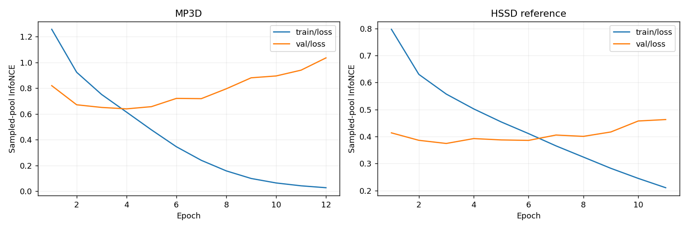

지도 표시를 분리했습니다. 2DFP 보기에서는 구조적 Free를 모두 흰색으로 표시합니다. Likelihood 보기의 회색 사선은 Free이지만 검색 후보가 없는 영역이며 낮은 likelihood를 뜻하지 않습니다. 계단 등은 같은 층의 촬영 위치로 쓸 수 없습니다.
train 3,072 / val 1,340 / test 1,427 RGB 대응 RIR. 건물 단위 분리. Best epoch 4; stop epoch 12. W&B · 전체 지표·provenance
| 설정 | N | R@0.1m % | R@0.5m % | R@1m % | R@1m·30° % | 중앙 위치 m | 중앙 방향 ° | Yaw≤10° % | Yaw≤30° % | Yaw≤50° % |
|---|---|---|---|---|---|---|---|---|---|---|
| MP3D acoustic corrected · test | 1427 | 2.17 | 14.30 | 20.53 | 14.58 | 4.98 | 80.00 | 17.94 | 31.18 | 39.10 |
| MP3D acoustic baseline · test | 1427 | 0.91 | 8.06 | 11.91 | 7.78 | 5.78 | 85.00 | 14.72 | 26.07 | 33.71 |
| MP3D UnLoc vision-only · test | 1427 | 11.49 | 42.89 | 50.11 | 49.40 | 0.96 | 5.00 | 58.72 | 61.39 | 62.30 |
| HSSD acoustic-only · val 참고 | 9965 | 11.29 | 36.51 | 44.64 | 34.21 | 1.63 | 45.00 | 32.33 | 45.88 | 51.12 |
각 test 층이 주어진 조건에서 0.2m 후보 18218개 × 36 yaw를 전수 검색합니다. RGB·visual prior·GT 후보 삽입 없이 Observed RIR만 입력합니다. HSSD는 다른 규모의 validation 데이터 참고값이며 직접적인 동일 조건 비교는 아닙니다.
48kHz E+C+N feature, 공유 encoder 128D, InfoNCE temperature 0.07. 학습 negative: train visual mining 공간 hard 4 + 같은 층 random 1 + 같은 위치 방향 2. Vision은 train 후보 ID 선정에만 사용합니다. 모델은 새로 학습했습니다.
FP RIR은 CAD 근거로 확인한 수정 음향 지도와 층별 대표 천장 높이를 사용합니다. 후보 높이는 scan navmesh + 1.5m이며 test GT Y를 참조하지 않습니다. 표시 배경은 실제 RIR geometry 지도입니다. 계단·층 연결 폐쇄와 균일 천장 근사가 포함됩니다.
색은 yaw 최대 cosine에서 query 최대를 빼고 exp(Δ/0.07)한 상대 점수입니다. 위치별 합이 1인 확률이나 RGB 간 확신도 비교가 아닙니다. 파랑=GT, 초록=예측 MAP. 모든 지표는 전체 test 1,427개 기준이며 아래 대표 이미지는 오류 유형별 사례입니다.

고정된 8개 후보의 val loss로 checkpoint를 선택합니다. 수정 전과 validation 후보 구성이 달라 loss 수치 자체를 직접 비교할 수 없습니다. 이 곡선의 sampled-pool retrieval과 전체 dense localization 성능은 구분해야 합니다.